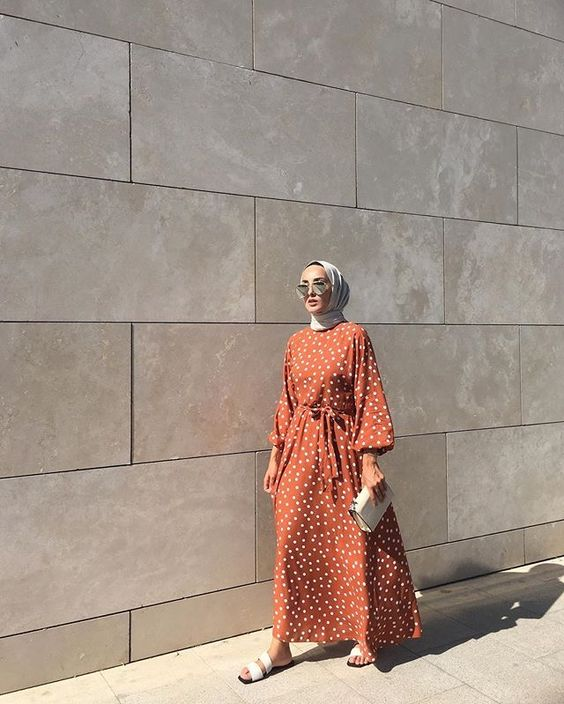
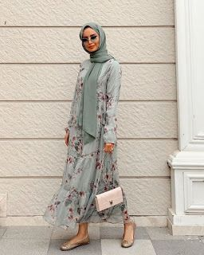
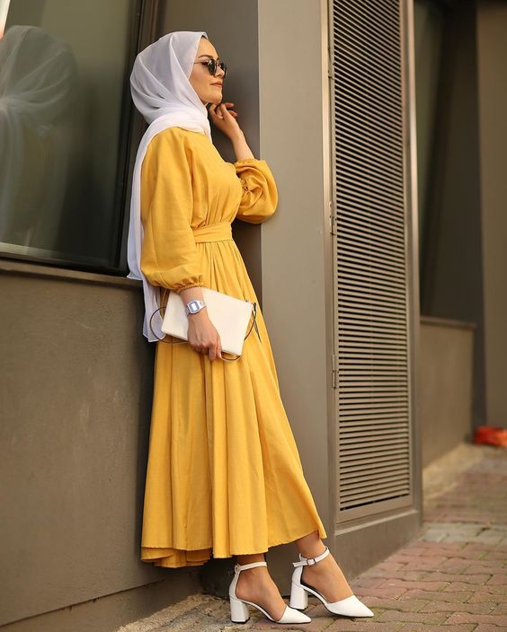

jollie memiliki arti cantik, diambil dari bahasa pranciss. Kami membawa nama brand dari pranciss karna pranciss adalah negara yang mengusung tinggi mode. Visi dan missi produk jollie adalah diperuntukan untuk wanita-wanita yang memakai produk ini agar percaya diri dan merasa cantik.Karena banyak nya wanita yang selalu merasa insecure, maka dari itu produk itu dibuat agar kepercayaan diri itu muncul setelah mengetahui apa filosofi dari brand ini ,selanjutnya teman dari jollie ini sendiri adalah modeswear fashion.
nah disini juga kita menampilkan beberapa produk contoh dari modeswear fashion
   Home